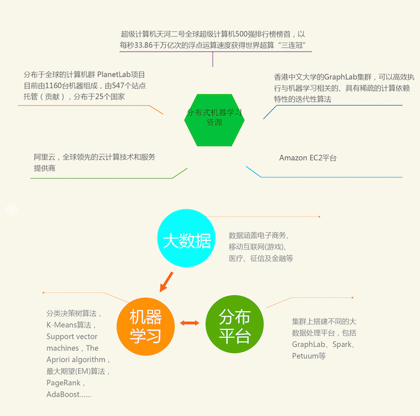
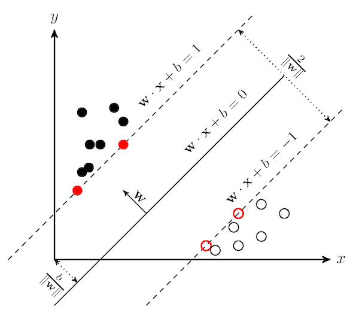
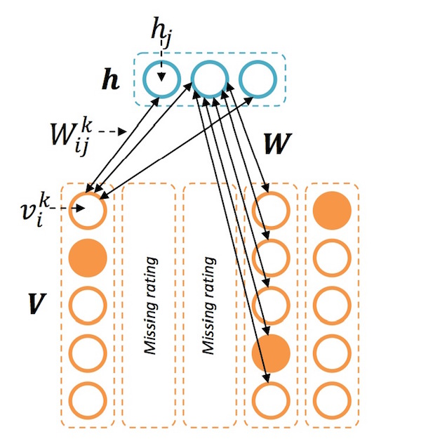
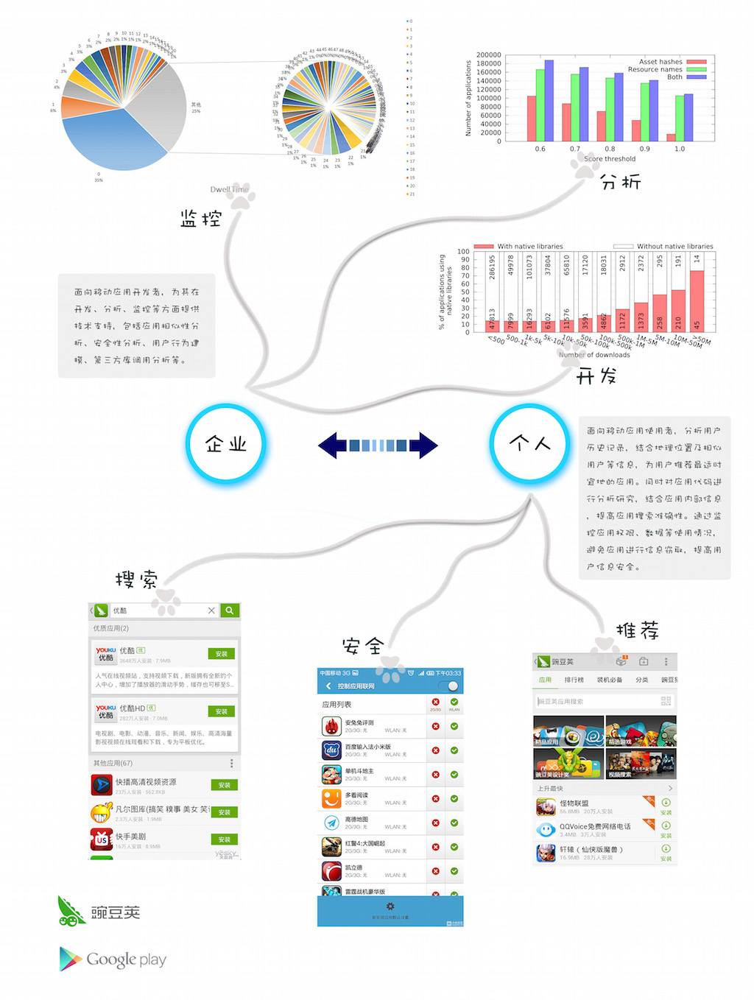
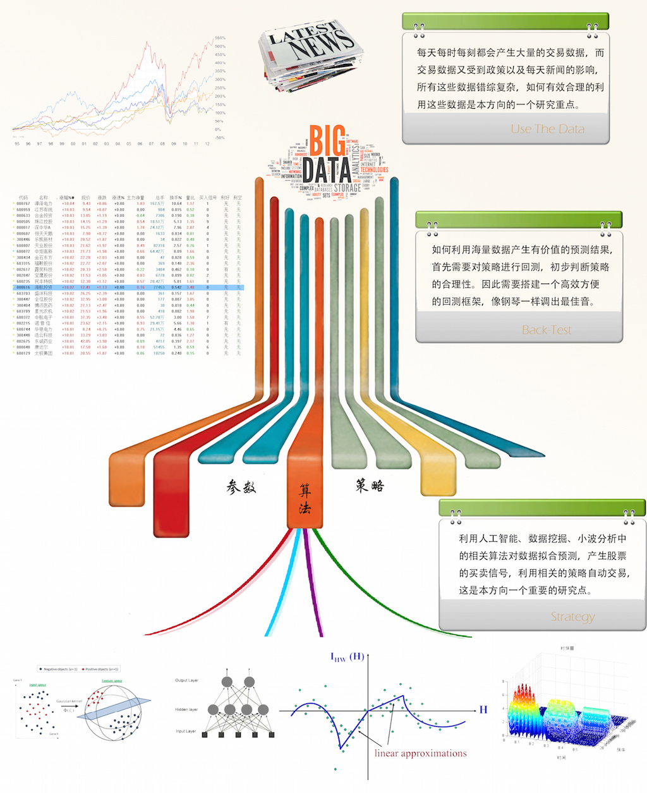
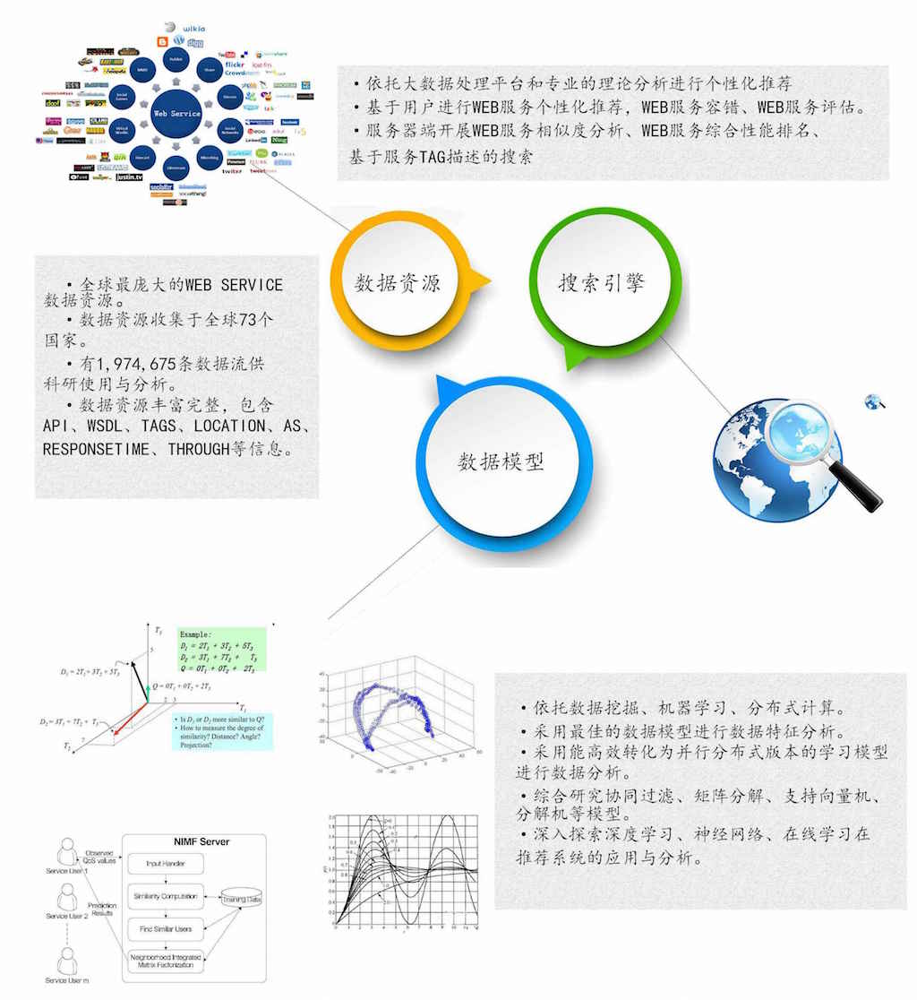

总方向
实验室以分布式平台为基础，结合多种机器学习与数据挖掘算法，在移动互联网、金融、服务计算等各个应用领域深入研究，挖掘信息，创造价值。

分布式平台

分布式平台是指将数据存储、数据分析和计算等构建在由多个主机构成的集群上的软件平台。实验室主要关注用于大数据分析的分布式机器学习运算平台。在该研究方向上，实验室与香港中文大学开展紧密合作，并在香港中文大学深圳研究院设立联合研究基地，定期进行访问交流。在平台资源方面，实验室能调用天河二号超级计算机、香港中文大学GraphLab集群、PlanetLab、阿里云、Amazon EC2等平台资源，为该研究方向的开展提供有力的支撑。本方向具体研究内容包括：
1. 平台搭建，在分布式集群上搭建不同的大数据处理平台，例如GraphLab、Spark、Petuum等，并且结合不同平台的优点，设计及开发实验室自己的大数据处理平台。
2. 平台算法研究，在分布式平台的基础上，围绕不同机器学习算法的特点，对算法进行并行化及优化，进一步提升算法性能。
3. 平台优化，通过对平台进行性能监控、软件容错、日志分析等研究工作，移除平台的性能瓶颈，提高平台的性能。
算法
围绕常用的机器学习及数据挖掘算法，比如包括矩阵分解、协同过滤、分解机、SVM、LDA、深度学习等算法进行深入研究，为顶层各种应用场景提供支撑。实验室的各个应用研究方向都需要用到相关算法。例如，在移动应用研究中，我们获取用户、移动应用等信息后，使用矩阵分解、协同过滤、SVM等算法，分析用户与应用的相关性，为用户推荐可能喜欢的应用；而在金融大数据的研究上面，需要各种机器学习算法分析大量的金融交易数据，构建各种量化交易模型；服务计算研究中，使用分解机、深度学习等方法，对大量网络请求服务质量数据进行计算，推荐、从而预测网络的性能，提高服务质量。以上各个应用场景均存在计算量巨大的挑战，因此需要通过算法并行化的方法，结合底层分布式平台，加快运算速度。同时，也需要将算法在线化，提高算法动态性和自适应性，以实时适应动态多变的现实计算环境。


应用 移动互联网

随着移动互联网的快速发展，各种各样移动应用不断涌现。移动应用市场的规模巨大、应用数量惊人，对应用开发者及使用者都提出了严峻的挑战。开发者面临定位市场需求、快速搜集第三方库、选择远程API、控制安全性等实际设计及开发问题。使用者在应用搜索、选择、安全等多方面更是面临不少困难。
围绕移动应用数量快速增长带来的相关问题和挑战，我们通过数据挖掘及机器学习方法，对移动应用产生的大数据进行深入的研究，搭建移动应用分析平台，从而为移动应用开发者提供技术支持，为移动应用使用者提供应用推荐、安全监控等服务。实验室在该研究方向与北京大学开展合作，成立“中大-北大移动服务研究小组”，进行学术交流与合作。在企业方面，通过与豌豆荚、360等公司合作，获取大规模真实数据，为该研究方向的开展提供有力支撑。该方向的具体研究内容包括：
1. 基于底层的分布式平台及算法支撑，搭建移动应用分析平台。
2. 面向移动应用开发者，为其在开发、分析、监控等方面提供技术支持，包括应用相似性分析、安全性分析、用户行为建模、第三方库调用分析等。
3. 面向移动应用使用者，分析用户历史记录，结合地理位置及相似用户等信息，使用矩阵分解、协同过滤等算法，为用户推荐最适时宜地的应用。同时对应用代码进行分析研究，结合应用内部信息，提高应用搜索准确性。通过监控应用权限、数据等使用情况，避免应用进行信息窃取，提高用户信息安全。
应用 金融大数据
量化模型，是把数理统计学应用于科学数据，以使数理统计学构造出来的模型得到经验上的支持，并获得数值结果。这种分析是基于理论与观察的并行发展的，在金融行业这种模型被具体化为量化交易，就是用数学建模的方式得出预测结果用于交易信号的产生，量化交易克服了主观交易的不可预估性以及客观因素的束缚性，其收益曲线一般较主观交易更为稳定。
随着信息时代的飞速发展，来自外界影响股市变化的信息量越来越多，为预测提供了更多输入信息，但是在这样的大数据背景下同样也面临着挑战，例如要在海量数据中找出时刻影响股市变化最重要的因子，对于普通用户来说，无论从建模还是海量数据的处理上都是非常困难的。
针对上述背景，本研究方向从两个方面展开：
1. 自动化交易平台的开发，这个研究方向主要是为普通投资者设计易用的自动交易平台，通过这个自动交易平台，普通投资者可以运用自己的策略实现自动化交易。
2. 自动化交易策略的设计，这个研究方向主要是设计能够自动交易、不断学习的量化模型，例如：选股、择时模型的建立，构造出一系列的策略工具，可以准确的选出优质股；套利策略的研究，通过分析已有的套利方式，例如：多空对冲、期权策略、统计套利等等，构造出一个强而有力的套利策略；算法交易，也是程序化交易，通过在对支持向量机、神经网络、小波分析等算法应用上产生买卖信号进行交易。

应用 服务计算

互联网的迅猛发展使其成为全球信息传递与共享的巨大的资源库。近年来，各种各样的互联网系统被广泛应用。Web服务是一种用于构建互联网系统的技术，它通过标准化及封装的方式，提高了软件模块的可重用性，使得不同软件系统可以很方便的互联互通。针对大规模互联网系统的设计及开发，本研究方向围绕Web服务的选择及推荐开展深入的研究，具体包括：
1. 利用统计学、机器学习、数据挖掘和并行分布式计算的知识，依托大数据处理平台，围绕用户开展Web服务个性化推荐，Web服务容错、Web服务评估等研究内容。
2. 围绕服务器端开展Web服务相似度分析、Web服务综合性能排名、基于服务tag描述的搜索等研究内容。
3. Web服务搜索及推荐引擎的设计及开发，抓取互联网上面的各种公开的Web服务，结合其服务质量及描述信息，通过B/S的结构，开发Web服务的搜索及推荐引擎。